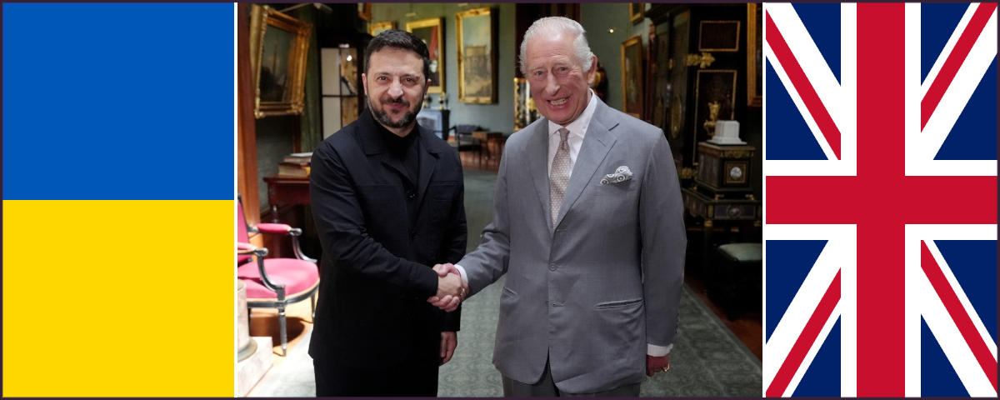

7th draft, this article has been written starting from a post published on Facebook, on 28th of May 2025.
The real problem is that we lost
The problem is not Putin, and the question is not even if the Putin is a dictator because in Europe we made trading, especially for oil, with every sort of dictators while CIA - for a public admission of one their ex-director - pushed several times and countries in dictatorship regime with the solely aim to advantage the US. Therefore, none of this is the problem. Which makes sense considering the Wolfowitz doctrine officially shapes the U.S. foreign policy since 1992.
The issue might be that we, as Europeans, have a long historical tradition of move in others countries kill them, rape the, sack them, enslaved them, for whatever reason we like because we are the civilised ones. While, we, as Europeans, never leveraged our superior civilisation rather than using weapons combined with a rare mastership of organised violence. Despite this, it was not a problem for us, as Europeans, perpetrating violence.
The real issue is that nowadays we, as Europeans, are not in the position to do that anymore, nor the United States of America. Indeed, we are not able to do this anymore since WW2, because every single war has been lost apart from the one against the fake army of Iraq. Since Vietnam to Afghanistan, there is to account a long series of proxy-wars or invasions wars that Westerns systematically have lost.
Ukraine proxy-war against Russia is not different, but hurts. Why does it hurt so much?
Well, it doesn't because Vietnam was a Hell in comparison. Not just because of the battlefield but also because of veterans. By the way, looking at some photos and reading some personal stories, Ukrainian veterans are even in worse shape than those who were back from Vietnam. Whatever joining the army to fight for freedom in Vietnam was a personal choice, many Ukrianins had been taken with force and sent to the front war.
It is hard to cope with such a kind of responsibility. In fact, currently in Ukraine, people who return and might wish to ask for compensation or even a vet pension, are seriously risking being accused of dissertation. While the body of the deaths are left behind or hidden, while the families instead of receiving a compensation for their lost, a notice of missing person, possibly a disertor including the warning tha hosting a deserting military is a felony.
It is a tragedy into a tragedy, a madness into a madness. In this scenario, it is difficult to say who is worse: those who support war for personal gain, those who sell weapons, or those who cheer on social media at the death of this or that target, as if war were a football match or a video game. Under this PoV, accusing Putin to be the bad guy — the evil enemy — is a way to distract everyone from thinking about what is going on. But why Putin in particular?
The enemy as a devil personification
The Devil, taking the blame for humans who won't own up to their own mistakes for centuries.
The idea to dehumanise those who want to kill or sack, is an evergreen. In a state of law, a criminal undergoes a fair trial and in case s/he is found guilty beyond any suspect, then it is condemned. This way of doing does not — or not so much — trigger our bestial instinct, our popular jury hide deep in us but ready to get out as soon as possible.
Therefore, like in witches' trials, we desperately need to blame someone in order to attack. A such desperate need, that the Inqeuisition was using torture fro extorcing confessions. It is an evergreen: convincing people that Joe is a very bad guy, torturing Joe until he confesses to be a bad guy or in self-defence act as a bad guy, then "look, Joe is a bad guy, for real".
Finally, in case this popular witch hunt doesn't go well, we need a scapegoat. Like in ancient times, when a goat was killed and the body burned for pleasing the divinity to forgive our mistakes. In the witch trial, the enemy and the scapegoat are the same person. If she confesses, then we burn her as a witch otherwise the same but to avoid facing our mistake.
Up to here, everything is pretty clear. But why Putin? Sitting at the top isn't enough. It is not even necessary. In fact, witches were marginalised people, usually. Also at the time of Crusades, the enemy was not a specific person but just an imaginary persona which was summarising all the biased narrative and gossip about the enemy (e.g. il feroce saladino).
Nella storia sono radicate le ragioni del rancore
Quali sono le vere ragioni per le quali gli Europei e gli Inglesi hanno accettato di tollerare gli Africani e i Musulmani ma hanno continuato ad odiare i Russi e in particolare la figura di Putin?
In questa chat con Gemini 2 si dipana un discorso che parte dall'attualità e va indietro per sei secoli dai quali emerge l'invidia sfacciata per la Russia come Terza Roma che ha sempre trovato un qualche vantaggio sufficiente a non farsi MAI sottomettere dagli Europei.
Passino i Cinesi che ci sono distanti culturalmente, passino gli Africani che un tempo li abbiamo ridotti in schiavitù, passino i Musulmani che di tanto in tanto li abbiamo vinti nelle crociate. Ma i Russi, mannaggia, non siamo mai riusciti, in sei secoli di perniciosa e radicata invidia, a sottometterli.
Non sazi di averci fatto tribolare così tanto senza manco darci la soddisfazione di essere almeno una volta stati nostri zerbini, hanno scelto un uomo che ci ricorda quasi ogni settimana, come fosse uno sberleffo, che non ci siamo MAI riusciti, in sei secoli di conflitti diretti o celati, a sottometterli.
Per approfondire questa parte, continua leggendo la conversazione con Gemini o la sua trascrizione.
Conclusion
We, as Western people, lost the proxy-war against Russia thus we did not managed to torture the witch nor to burn her. Suddenly, our enemy is not anymore Russia but Iran. In such a case it is not because of the love for the State of Israel, but because Iran is planning to threaten us with developing a nuclear bomb.
Curiously, Kohomeni is not the enemy because at his age, he is more like an orthodox icon rather than man of astuce. In fact, those who had been targeted were top-level commanders in charge or scientists. Unfortunately, the U.S. did not have enough SM-3 to continue the war and protect Israel, but at the same time they did not have powerful-enough conventional bombs to effectively hit Iran underground nuclear plants.
Because of these two limitations, a cease-fire agreement was necessary otherwise another war was bitterly lost on the battlefield. So, the maneuver to shift the public opinion toward Iran, the new #1 enemy, was also failed and soon we were forced to see on East and accept also the oher bitterly war lost on the battlefield.
Anyway, in this story, the real defeat is diplomacy.
Update 2025-07-01

WARNING!
Contenuto aggiunto ma ancora in profonda fase di revisione, tradurre in inglese e associare con fonti/link.
Zelensky, la stella cadente della UE
Secondo me Zelensky sarà portato ad esempio, dai posteri, come icona di questo primo quarto di secolo. Lasciate che spieghi perché questa è una storia notevole.
Ha iniziato una guerra (cfr. qui) che non voleva fare e non gli conveniva fare, si è ostinato a continuarla fino a quando quelli che lo avevano costretto a scommeterci all-in del suo, non hanno cambiato presidente e quindi lo hanno abbandonato dopo averlo costretto a firmare la restituzione dei prestiti di guerra.
Già questo da solo sarebbe tanta roba ma tutto sommato solo la re-edizione di una sceneggiatura più volte osservata nell'arco degli ultimi 50 anni in cui la CIA ha portato al potere un qualche dittatore per poi eliminarlo una volta che tale dittatura aveva maturato le condizioni ideali per approfittarne senza intermediari. Invece no, Zelensky è riuscito a superare questo cliché però il giorno che pensava di aver vinto tutto, ha scoperto che aveva perso e si è dovuto rintanare in un bunker.
Ormai lo si dava per spacciato e invece anche dal bunker ne è uscito, e quando finalmente ne è uscito, è stato ricevuto da Carlo, il Re d'Inghilterra. Nel bunker è entrato con la mimetica e ne è uscito in abito, giacca pantalone nero, ma senza cravatta, il classico dei tirapiedi dei mafiosi russi perché quelli degli italo-americani amano metterci una nota di colore.
Total black suite, anche perché qualsiasi altro colore non sarebbe adatto al riciclaggio di denaro [TODO: link 317 AML + default]. Un cambio d'abito che come a treatro presuppone anche un cambio di ruolo. D'altronde una svolta era inevitabile perché, non solo gli americani, pure gli europei fanno fatica ad accettare un perdente come eroe.
Però un perdente può essere un "affidabile" uomo d'affari, affari di cui altri più pudici non si vorrebbero occupare, tipo disseminare l'Ucraina di mine anti-uomo nella speranza di fermare l'avanzata dell'armata Russa nella conquista. Immaginate l'Ucraina con l'accesso al Mar Nero bloccato e il territorio minato, un capolavoro!
Si noti che Re Carlo, è anche il primo sovrano inglese e quindi capo della Chiesa Anglicana — da quando un suo predecessore chiamato Enrico VIII volendo divorziare dalla moglie ma trovando l'opposizione del papato ha deciso che fondare la chiesa Anglicana e tagliare la testa alla moglie era più consono che sopportare ambedue — che ha fatto gli auguri per la festa mussulmana del digiuno invece che per la Pasqua cristiana e ha elevato a titolo onorifico con tanto di spada sulla spalla un musulmano.
Per carità di dio, i tempi cambiano ed entro certi limiti questo richiede anche adattamento, ma considerando che la monarchia è un'istituzione che per sua natura è tanto conservatrice e tradizionale almeno quanto la Chiesa, passare da Enrico VIII a Carlo III è un uno shock reale.
Sicché non ci deve stupire se gli Australiani, già in tempi non sospetti ma che loro conoscevano meglio, hanno minacciato l'indipendenza — più un atto formale che sostanziale — dalla Corona Inglese se questa avesse continuato ad insistere che l'Australia avrebbe dovuto cambiare sulle sue banconote l'effige della Regina Elisabetta con quella di Re Carlo.
Per il poco tempo che dio mi ha concesso di essere re. (cit.)
Citazione dello stesso in Italiano fatta al Parlamento Italiano e affato fuori luogo perché Carlo III è salito al trono relativamente in tarda età e secondo i tabloit inglesi affetto da una forma di cancro incurabile.
Mentre Zelensky che è ancora in carica come presidente dell'Ucraina nonostante il suo mandato elettivo sia scaduto nell'aprile 2024, per tutto quanto sopra — e altro ancora che sapremo in futuro quando ormai non più capo di stato non si potrà più nascondere dietro il paravento dei servizi segreti (SBU) — magari ritratto proprio in questa foto ghignante metnre stringe la mano a Re Carlo, sarà ricordato come icona del primo quarto del nostro secolo.
La cosa più ardua per gli storici del futuro, però, sarà trovare una ragionevole spiegazione a come in 60 anni, ovver nell'arco di due generazioni, siamo passati da quelli a questi.
Secondo la tradizione diplomatica
Ha iniziato una guerra?
Russia e Ucraina, avevano trovato un accordo di pace già a novembre 2021, che poi non era altro che attenersi agli accordi di Minsk e smetterla di perseguitare i cittadini ucraini di lingua e origine russa che poi nella pratica si limitava a smetterla di fare quelle azioni tipo bombardare il Donbass che andavano avanti da prima degli accordi di Minsk e che avrebbero dovuto essere cessati già da allora.
Ma evidentemente come ha rivelato la Merkel dopo che il sabotaggio del Nord Stream I e II, gli americani avevano acconsentito che le parti firmassero quegli accordi ma solo per prendere tempo per preparare l'Ucraina alla guerra. La proposta di pace è rimasta sul tavolo e Zelensky si era convinto a firmare ed (questa volta) ad onorare la firma del trattato ma Biden lo ha chiamato e gli ha ordinato di non firmare, di fatto causando l'inizio della guerra.
Perché per quanto possa la propaganda NATO aver stravolto la mente delle persone, rimane un fatto acclarato nell'intera storia della diplomazia internazionale che coloro che firmano un patto, non lo mantengono, lo ignorano per anni, e per altro lo fanno consapevolmente tanto prima o poi sarà l'altra parte a dover reagire, è considerato "iniziare una guerra".
Quindi Zelensky ha, di fatto, iniziato una guerra per procura su ordine di Biden.
La cpaziosa questione della Crimea
Il conflitto inizia con l'occupazione della Crimea?
Occupazione che non è mai esistita visto che la Crimea è sempre stata Russa ma durante l'Unione Sovietica quando le questioni fra confini non erano particolarmente sentite, anzi negate, fu territorialmente assegnata in gestione a quella che oggi è l'Ucraina.
Alla dissoluzione dell'Unione Sovietica, quelle che oggi sono la Russia e l'Ucraina giunsero ad un accordo per il quale la Russia avrebbe protetto militarmente l'Ucraina e l'avrebbe sostenuta finanziariamente, in cambio di questo l'Ucraina avrebbe dato indietro le testate nucleari alla Russia che comunque non poteva lanciare senza i codici che avevano al Kremlino e avrebbe permesso alla Russia di continuare ad usare la Crimea per le sue basi navali anche militari, in particolare quella di Sebastopoli.
Visto che ancora nel 2004 in Ucraina il 90% della popolazione parlava russo come seconda lingua e il russo era considerata seconda lingua ufficiale non si è mai posto il problema della Crimea anche perché la Russia non è mai venuta meno agli accordi di sostegno del debito pubblico Ucraino fino al 2014 e ancora oggi paga importanti fee sul trasporto del gas russo in Europa attraverso l'Ucraina.
Vale la pena sottolinearlo, perché altrimenti è difficile capire dalla parte degli occidentali che firmano accordi per poi non rispettarli: nonostante l'Ucraina sia formalmente in guerra contro la Russia a causa del governo Zelensky che dall'aprile 2024 è in carica solo a causa della legge marziale (o stato di guerra, dir si voglia), la Russia non è mai venuta meno agli impegni che avevano o hanno ancora una ragione di essere e non stupirebbe che nel caso la Russia prendesse il controllo dell'Ucraina, ritornerebbe a finanziarne il debito pubblico, motivo per il quale Zelensky & Co. fanno del loro meglio per lasciare un buco enorme ma purtroppo finendo in default tecnico. [TODO link: 317 AML + default]
Vale la pena notare che, senza sorpresa, la Crimea essendo sempre stata a maggioranza di popolazione russa, ha chiesto l'annessione alla Russia con un referendum che ovviamente noi occidentali contestiamo ma se avessero votato in favore dell'Ucraina, oggi sbraiteremmo che tale referendum, in quanto espressione democratica diretta della volontà popolare, è sacro.
Curiosamente, i fautori della democrazia e della volontà popolare, sono favorevoli a sacrificare il popolo ucraino fino all'ultimo uomo contro la Russia. Si fa persino fatica a considerare il mainstream come "pensiero unico" perché se fosse frutto di una sola mente, di una sola regia, la schizofrenia sarebbe la diagnosi meno negativa.
Se l'ucraina non avesse ceduto le bombe nucleari alla Russia, oggi sarebbe diverso?
è inutile tenersi degli ordigni che non si possono usare senza il consenso di Mosca;
oggi grazie a quel patto l'Ucraina non è un avamposto di basi nucleari della Russia.
L'Ucraina per diversi decenni hanno goduto di un'apertura e gli Ucraini di una libertà di viaggiare, quindi anche di commerciare che, per esempio, la Bielorussia non ha avuto.
Per contro l'Italia che è stata "liberata" dagli americani per diventarne un loro protettorato de-facto in quanto avamposto per le basi nucleari USA, non è ha mai goduto di un'indipendenza confrontabile a quella dell'Ucraina dopo la dissoluzione dell'URSS fino al 2007, per quanto questo possa sembrare strano.
Quella dell'Italia è una sorte che pare la Polonia e la Romania ci contendono, a dimostrazione che la gente non impare mai nulla dalla storia, nemmeno da quella recente, e i politici sono così corrotti che sembrano pure scemi da tanto sono in contrasto con gli interessi di coloro che dovrebbero rappresentare.
Infine, quanto siano felici gli Ucraini che gli USA abbiano "esportato la democrazia" nel loro paese penso che a Baltimora ne abbiano avuto un primo esempio e, forse, è anche il motivo per il quale Trump ha deciso di sfilarsi da quel fronte, come per altro fece in Afganistan nella sua prima e più tradizionale presidenza, dimostrando che non ha difficoltà ne ad accettare ne a gestire la sconfitta sul campo, a differenza degli altri presidenti americni che lo hanno preceduto.